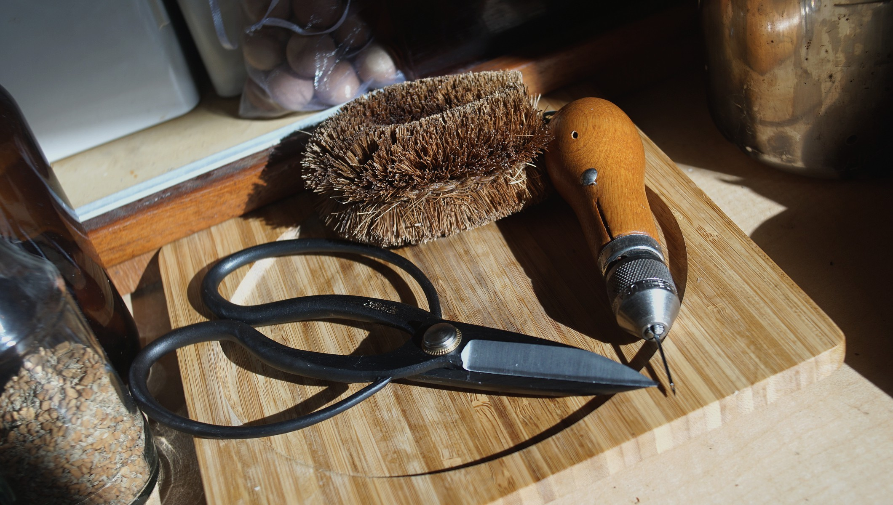

galley tools
As with most things in life, 20% of anything does 80% of the work. When moving into a smaller space, it is important to find that 20% and surround yourself with things purposefully. Single-serving tools and kitchenware will not do.
We choose durable(stainless steel, quality wood), multi-functional and simple (unibody, non-electric) tools.
Ideal materials include glass, wood, cast iron and stainless steel. For cooking, we have:
- Tawashi scrubber
- Large shears
- Basic rigging knife
- Claw-shaped can opener
- Ceramic burr coffee grinder
- Bamboo Spatula
- Cast-iron pan
- Cast-iron pot
- Stainless steel pot
- Medium-sized marble mortar and pestle
- Stainless steel unibody vegetable cleaver
- Stainless steel unibody serrated knife
- Stainless steel julienne slicer
- Stainless steel measuring cups
- Large stainless steel bread making bowl
- Stainless steel stovetop pressure cooker
- Unibody wooden rolling pin
- Potato masher
- Metal mesh grater
- Spong Grinder No 20 (aka meat grinder)